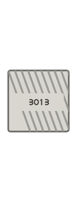
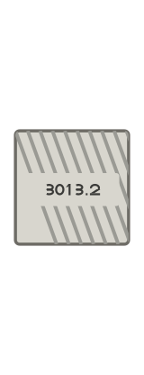

Signs: SignalHead
12 items: Drawn 2, Placeholder 10
3000Traffic light signalsDrawn 3000.2Traffic light signals for the control of vehicular traffic consisting solely of pedal cycles and electric scooters being used in a trialPlaceholder
3000.2Traffic light signals for the control of vehicular traffic consisting solely of pedal cycles and electric scooters being used in a trialPlaceholder 3000.7Traffic light signals as diagram 3000 with additional signals placed in any of the positions marked 1, 2, 3 and 4Placeholder
3000.7Traffic light signals as diagram 3000 with additional signals placed in any of the positions marked 1, 2, 3 and 4Placeholder 3001Traffic signal with a box signPlaceholder3001.2Green arrow to show the direction for vehicular traffic to take for inclusion in traffic light signals as described in Part 1Placeholder
3001Traffic signal with a box signPlaceholder3001.2Green arrow to show the direction for vehicular traffic to take for inclusion in traffic light signals as described in Part 1Placeholder 3013.3Tramcar may proceed beyond the stopline and proceed to the leftPlaceholder
3013.3Tramcar may proceed beyond the stopline and proceed to the leftPlaceholder 3013.4Tramcar may proceed beyond the stopline and proceed to the rightPlaceholder
3013.4Tramcar may proceed beyond the stopline and proceed to the rightPlaceholder 3013.5Tramcar must not proceed beyond the stop line except that, as respects a tramcar which is so close to the stop line that it cannot safely be stopped without proceeding beyond the stop line, it conveys the same indication as the aspect which was shown immediately before itPlaceholder
3013.5Tramcar must not proceed beyond the stop line except that, as respects a tramcar which is so close to the stop line that it cannot safely be stopped without proceeding beyond the stop line, it conveys the same indication as the aspect which was shown immediately before itPlaceholder 3014Flashing red lights at level crossings, airfields or bridgesDrawn
3014Flashing red lights at level crossings, airfields or bridgesDrawn
3000.2Traffic light signals for the control of vehicular traffic consisting solely of pedal cycles and electric scooters being used in a trialPlaceholder3000.7Traffic light signals as diagram 3000 with additional signals placed in any of the positions marked 1, 2, 3 and 4Placeholder3001Traffic signal with a box signPlaceholder3001.2Green arrow to show the direction for vehicular traffic to take for inclusion in traffic light signals as described in Part 1Placeholder
3013Light signal for control of tramcars (diagram shows the light signal fully illuminated- see items 3 to 7 for the illumination of the signal to convey particular descriptions)Placeholder3013.1Tramcar must not proceed beyond the stop linePlaceholder
3013.2Tramcar may proceed beyond the stopline and proceed straight aheadPlaceholder3013.3Tramcar may proceed beyond the stopline and proceed to the leftPlaceholder3013.4Tramcar may proceed beyond the stopline and proceed to the rightPlaceholder3013.5Tramcar must not proceed beyond the stop line except that, as respects a tramcar which is so close to the stop line that it cannot safely be stopped without proceeding beyond the stop line, it conveys the same indication as the aspect which was shown immediately before itPlaceholder3014Flashing red lights at level crossings, airfields or bridgesDrawn